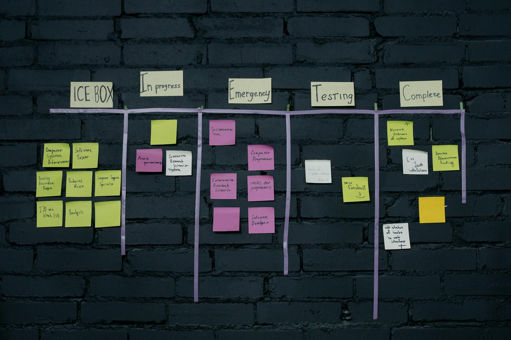

TL;DR
Begin your dropshipping hustle by understanding pitfalls and developing a structured workflow. Focus on supplier vetting, use effective tools, and learn from others' mistakes. Aim for clarity in your product selection to enhance your success.
The Essential Guide for New Dropshippers
Understanding the dropshipping landscape is crucial for beginners. Many enter this field with the dream of easy profits but often encounter harsh realities. Common misconceptions include thinking that a dropshipping business can run on autopilot or that extensive tech skills are necessary.
In reality, these beliefs are misconceptions that can derail your efforts right from the start. Success hinges on diligent supplier vetting, ample market research, and continuous learning.
For instance, failing to choose the right niche can lead to low sales and high competition. If you're unsure about product selection or marketing strategies, you're not alone.
Why Shiny Object Syndrome Derails New Dropshippers
One major pitfall for novice dropshippers is the allure of quick success through trendy products. Many are seduced by social media ads showcasing luxurious lifestyles that claim dropshipping can lead to instant wealth with minimal effort.
For instance, consider someone who spots a viral TikTok trend featuring a flashy gadget that promises to be the next big thing. They jump in without adequate research, investing the first $500 of their budget to promote it.
However, within a month, they discover the product has numerous negative reviews, and their sales have plummeted to zero. This misstep not only hurts their profits but also tarnishes their brand's credibility.
The reality of dropshipping is far more complex; inefficiencies in supplier selection can wreak havoc on your store's reputation. For example, if a dropshipper partners with a supplier who has a response time of over 48 hours, critical customer queries often go unanswered, leading to frustration and abandoned carts.
A study shows that 47% of consumers expect a response within five minutes, making slow communication a dealbreaker. Also, be cautious of suppliers with hidden fees that can cut into your profit margins; a surprise 10% shipping fee on a $30 product can swiftly erode your returns.
Another common scenario involves a dropshipper who neglects to inquire about package tracking capabilities. Customers today expect real-time tracking updates. If a supplier fails to provide this, you may face a flood of inquiries and refund requests. The emotional toll of managing these issues can be overwhelming, especially when you're juggling a full-time job alongside your side hustle.
To avoid these pitfalls, thorough research and a detailed checklist for vetting suppliers can make all the difference.
Your Step-by-Step Workflow for E-commerce Success
To get your dropshipping store up and running, follow this structured workflow:
- Choose Your Niche: Identify products that interest you and have market demand. Utilize Google Trends to analyze search interest.
- Select a Platform: Pick an e-commerce platform like Shopify or WooCommerce. Shopify offers easy integration with suppliers like Oberlo.
- Set Up Your Store: Customize your store’s layout to match a theme that resonates with your target audience.
A user-friendly design increases conversion rates.
- Source Your Products: Use AliExpress or Oberlo to find reliable suppliers. Evaluate them based on shipping times, review scores, and product quality.
- Implement Marketing Strategies: Utilize social media ads and influencer partnerships to drive traffic.
- Launch and Monitor: Once launched, continually analyze your store’s performance using Google Analytics.
Adjusting strategies based on data will be key to your success.
30 Days to Your First Dropshipping Sale: A Case Study

In just 30 days, I transformed my idea into a functional dropshipping store. Here's how I did it:
- Week 1: Focused on niche research and finalized product selection. By polling friends and using tools like Google Trends, I narrowed down to eco-friendly home products.
- Week 2: Set up my Shopify store, incorporating a clean layout and essential apps for SEO and cart abandonment recovery.
- Week 3: Launched a targeted social media advertising campaign.
I spent $200 on Facebook ads, which led to my first sale.
- Week 4: Focused on improving customer engagement by sending follow-up emails post-purchase. I also began analyzing traffic sources to better allocate my ad budget.
Why New Dropshippers Hit Roadblocks: Lessons from Seasoned Pros
In my six-month journey, I encountered several costly mistakes that taught me valuable lessons about dropshipping. One of my biggest missteps was assuming that a hefty advertising budget would automatically translate into sales.
For instance, I invested $500 in Facebook ads without realizing that a weak product description led to low conversion rates. The ads generated traffic, but my sales barely crossed the $200 mark, leaving me at a loss.
Customer service is another area where I stumbled. I initially overlooked its significance, thinking that a great product alone could fetch me loyal customers. However, an unattended inquiry about a delayed order led to a negative review, which dampened my store's trustworthiness.
In my first month, three out of ten customer inquiries went unanswered, and I ended up with a 2-star rating. Had I prioritized timely communication, even a simple follow-up could have turned those purchasers into repeat clients.
Hidden costs also posed significant challenges. I failed to account for shipping fees and unexpected returns. For example, a return request for a $45 item due to shipping damage not only cut into my profits but also affected my bottom line; I absorbed a return shipping cost of $10, further eating into earnings.
When I compiled all the expenses—from ad spend to shipping and returns—my initial profit margins shrank from a projected 30% to around 10%.
Furthermore, maintaining an accurate inventory is crucial. In my third month, due to the increasing demand for a particular product, I neglected to check stock levels. When I sold ten units of an item that was out of stock, I faced backlash from customers eager for their purchase.
Delaying refunds led to additional disgruntlement, ultimately costing me three customers who left negative reviews on social media, which can be catastrophic in the competitive online market.
To sidestep these pitfalls, you should establish a comprehensive budget considering all potential costs, including advertising, shipping, and returns.
Next Steps: Essential Tools and Resources for Your Dropshipping Success
Equipping yourself with effective tools is crucial as you scale your dropshipping business. Start by using tools like Shopify for your store, Google Analytics for performance tracking, and social media platforms for marketing.
To simplify daily operations, consider automation tools such as Oberlo for product sourcing and Mailchimp for email marketing campaigns. By integrating these tools, you're not just saving time; you're laying the groundwork for long-term success.
Additionally, stay updated on industry trends by subscribing to newsletters from e-commerce experts.
FAQ
What are the initial costs of starting a dropshipping business?
Starting a dropshipping business typically requires a budget of around $500 to $1,000 for website setup, marketing, and initial product sourcing.
How do I choose the right products to sell in my dropshipping store?
Analyze market demand using tools like Google Trends, and focus on a niche that interests you while ensuring it has enough profitability and demand.
This article has been reviewed for practical usefulness and is updated as information changes.
Next step
Use the article as a decision point, not just reading material. Your next system matters more than more browsing.
Search more articles
Find related tools, workflows, and guides.
Photo credits
- Photo 1: GABRIEL CARVALHO via Unsplash
- Photo 2: Selina Stauffer via Unsplash
- Photo 3: RDNE Stock project via Pexels
- Photo 4: cottonbro studio via Pexels
- Photo 5: Christina Morillo via Pexels